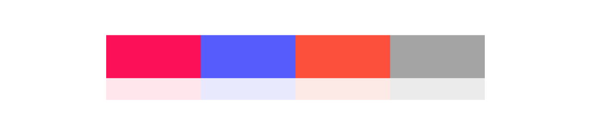
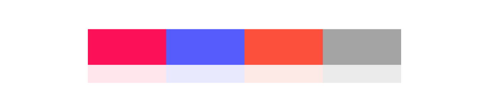

saiko!
2017
Type
Front end
Software
Dreamweaver, Photoshop, IllustratorSaiko! is an interactive and informative website of the trendiest prefectures in Japan. The concept of the website was for the users to "explore" through the prefectures, through the interaction of moving left, right, up or down. The idea was to give the user a sense of traveling through Japan. Also, the style of the design takes a quirky and modern approach through the choice of color and typography.
 
